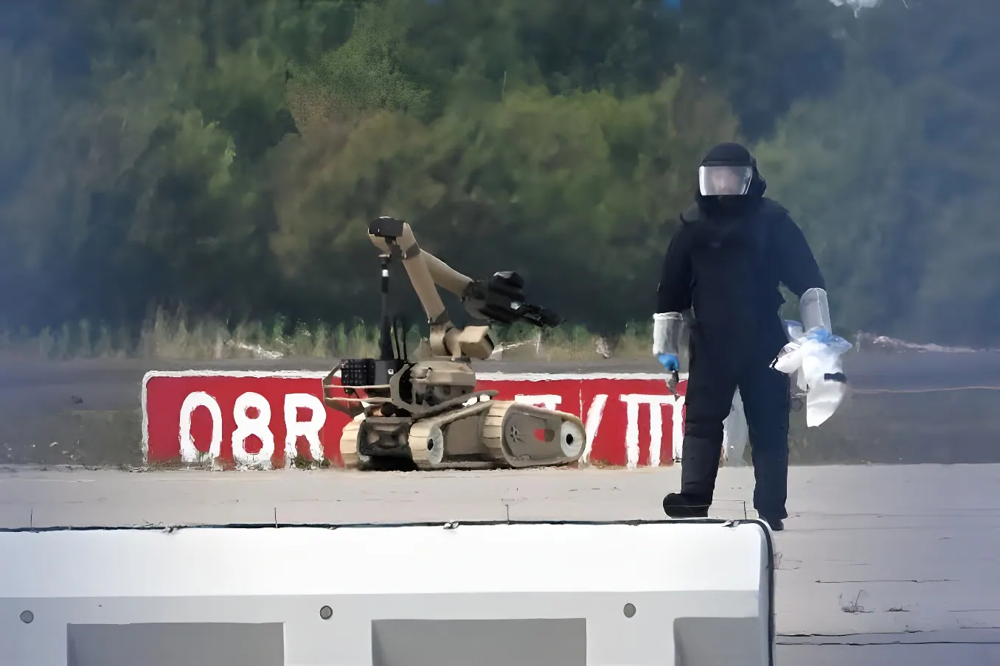

Dans la nuit du 4 au 5 août 2026, un drone chargé d'explosifs a été découvert sur le tarmac de l'aéroport de Leipzig/Halle, à quelques mètres d'avions-cargos ukrainiens Antonov. L'engin, équipé d'un détonateur professionnel, n'a pas explosé en raison d'une défaillance technique. Le Parquet fédéral allemand a repris l'enquête dès le lendemain, qualifiant l'incident d'attaque grave contre les infrastructures de transport du pays. Retour sur une affaire qui a mis au jour, en plein cœur de l'Allemagne, une nouvelle dimension de la guerre hybride.
Deuxième aéroport de fret le plus important d'Allemagne après Francfort, Leipzig/Halle est devenu, depuis l'invasion russe de l'Ukraine, une pièce maîtresse de la logistique militaire occidentale. C'est là que la compagnie ukrainienne Antonov Airlines a rapatrié l'essentiel de sa flotte de gros porteurs An-124 après la destruction de sa base historique de Hostomel, près de Kiev, au tout début du conflit. L'aéroport, classé infrastructure critique par le gouvernement fédéral, accueille aussi l'un des plus grands hubs européens du transporteur DHL et soutient des opérations logistiques pour l'Allemagne et l'OTAN.
C'est dans cet environnement hautement sensible qu'un employé de l'aéroport, chauffeur de bus sur le tarmac, a repéré un drone volant à basse altitude près de la piste sud, à proximité de plusieurs Antonov An-124 stationnés. L'appareil est resté plus de quatre heures dans la zone sécurisée sans être détecté par les systèmes de surveillance en place.
Un chauffeur de bus de l'aéroport repère un drone volant à basse altitude près de la piste sud, à proximité de plusieurs Antonov An-124 ukrainiens stationnés sur le tarmac.
Les deux pistes de l'aéroport sont fermées. Un robot de déminage de la police fédérale retire le détonateur de l'engin. Un avion-cargo DHL, contraint de remettre les gaz en raison de la fermeture, percute un objet non identifié — probablement un second drone — et se déroute vers Hanovre, à 200 km, où il atterrit sans dommage grave.
Le ministre de l'Intérieur Alexander Dobrindt interrompt ses vacances pour se rendre sur place. Il évoque une « nouvelle qualité de danger » et un scénario d'attaque hybride hautement professionnel.
Le Parquet fédéral (Generalbundesanwalt) de Karlsruhe reprend l'enquête au parquet général de Dresde, retenant les qualifications de tentative de provocation d'explosion et d'atteinte dangereuse à la circulation aérienne.
Un autre drone, défectueux, ainsi qu'une substance identifiée comme environ 50 grammes d'hexogène (RDX), un explosif militaire puissant, sont découverts dans un champ de la commune de Kabelsketal, en bordure ouest de l'aéroport.
Les enquêteurs poursuivent plusieurs pistes, notamment fondées sur des traces d'ADN retrouvées sur le matériel, sans qu'aucun suspect n'ait été identifié ni interpellé.
Selon les premiers éléments d'enquête, une charge explosive de la taille d'un poing, vraisemblablement du Semtex, avait été fixée sous le drone avec un détonateur d'apparence professionnelle. Le dispositif n'a pas explosé en raison d'un défaut technique du détonateur, et non d'une intervention des services de sécurité. Des médias allemands, citant un rapport de police confidentiel, évoquent un appareil équipé de deux cartes SIM et d'antennes 5G, qui aurait pu être piloté par le réseau de téléphonie mobile — un mode de guidage quasiment indétectable pour des capteurs anti-drones calibrés sur les fréquences de commande habituelles, ce qui expliquerait sa présence prolongée et non repérée sur le tarmac.
Un rapport policier confidentiel, cité par la Süddeutsche Zeitung, la NDR et la WDR, a par ailleurs révélé qu'un des Antonov An-124 stationnés à proximité immédiate du drone transportait une cargaison de munitions militaires en provenance de France, vraisemblablement destinée à un réacheminement ultérieur vers l'Ukraine — un détail qui accroît considérablement la portée stratégique de l'incident.
| Indicateur | Donnée vérifiée |
|---|---|
| Nuit de la découverte | 4 au 5 août 2026 |
| Autorité chargée de l'enquête | Parquet fédéral (Karlsruhe), depuis le 6 août |
| Vols déroutés | Environ 19 |
| Second incident | Avion-cargo DHL heurté, dérouté vers Hanovre (200 km) |
| Explosif initial suspecté | Semtex, détonateur défaillant |
| Substance retrouvée le 14 août | ~50 g d'hexogène (RDX) |
| Suspect identifié (fin août 2026) | Aucun à ce jour |
Le Parquet fédéral a classé l'affaire comme une atteinte grave susceptible de compromettre la sécurité intérieure et extérieure de la République fédérale. Dans les milieux du contre-espionnage allemand, le professionnalisme du montage — charge militaire, détonateur sophistiqué, guidage potentiellement par réseau mobile — oriente les soupçons vers la Russie, à l'image du député Roderich Kiesewetter, qui a publiquement pointé Moscou. D'autres analystes, comme le politologue Stefan Meister de la Deutsche Gesellschaft für Auswärtige Politik, appellent toutefois à la prudence tant que l'enquête n'a pas formellement établi de responsabilité. La Russie a de son côté rejeté publiquement toute implication.
Cet épisode s'inscrit dans une vague plus large de survols de drones non identifiés au-dessus de sites sensibles européens depuis 2024, avec plusieurs dizaines de signalements recensés en Allemagne, en France, en Belgique, aux Pays-Bas, au Royaume-Uni et au Danemark. Face à cette menace, le ministre Dobrindt a convoqué pour la fin du mois d'août un sommet consacré à la défense anti-drones à Flensbourg, réunissant les pays baltes, la Pologne, la Suède, la Norvège et le Danemark.
« Qu'un drone armé d'explosifs se trouve sur un aéroport constitue un nouveau scénario de menace. »
— Alexander Dobrindt, ministre fédéral de l'Intérieur, août 2026Détonateur défectueux ou vigilance d'un employé : c'est un concours de circonstances, et non un dispositif de sécurité, qui a évité la catastrophe à Leipzig/Halle. L'affaire illustre la vulnérabilité persistante des infrastructures critiques européennes face à des drones bon marché, difficiles à détecter et potentiellement pilotés par des réseaux de télécommunication ordinaires. Elle confirme surtout que le soutien logistique à l'Ukraine, adossé à des hubs comme Leipzig/Halle, est devenu une cible à part entière d'une guerre hybride qui ne se limite plus aux frontières du front. Reste, pour Berlin et ses partenaires, à transformer l'alerte en réponse durable — technique autant que diplomatique.
In der Nacht vom 4. auf den 5. August 2026 wurde auf dem Rollfeld des Flughafens Leipzig/Halle eine mit Sprengstoff beladene Drohne entdeckt, nur wenige Meter von ukrainischen Antonov-Frachtmaschinen entfernt. Das mit einem professionellen Zünder ausgestattete Fluggerät explodierte wegen eines technischen Defekts nicht. Die deutsche Bundesanwaltschaft übernahm bereits am folgenden Tag die Ermittlungen und stufte den Vorfall als schwerwiegenden Angriff auf die Verkehrsinfrastruktur des Landes ein. Ein Rückblick auf einen Fall, der mitten in Deutschland eine neue Dimension hybrider Kriegsführung offenbarte.
Leipzig/Halle ist nach Frankfurt der zweitgrößte Frachtflughafen Deutschlands und seit dem russischen Überfall auf die Ukraine ein zentraler Baustein der westlichen Militärlogistik geworden. Dorthin verlegte die ukrainische Fluggesellschaft Antonov Airlines den Großteil ihrer An-124-Großraumflotte, nachdem ihr historischer Stützpunkt Hostomel bei Kiew zu Beginn des Krieges zerstört worden war. Der Flughafen, von der Bundesregierung als kritische Infrastruktur eingestuft, beherbergt zudem einen der größten europäischen Umschlagsplätze des Logistikkonzerns DHL und unterstützt Militärlogistik für Deutschland und die NATO.
In diesem hochsensiblen Umfeld entdeckte ein Flughafenmitarbeiter, ein Busfahrer auf dem Rollfeld, eine tieffliegende Drohne nahe der Südbahn, in unmittelbarer Nähe mehrerer geparkter ukrainischer Antonov An-124. Das Fluggerät befand sich über vier Stunden lang unentdeckt im Sicherheitsbereich, ohne von den vorhandenen Überwachungssystemen erfasst zu werden.
Ein Busfahrer des Flughafens entdeckt eine tieffliegende Drohne nahe der Südbahn, in der Nähe mehrerer auf dem Rollfeld geparkter ukrainischer Antonov An-124.
Beide Start- und Landebahnen werden gesperrt. Ein Sprengstoffroboter der Bundespolizei entfernt den Zünder des Geräts. Eine DHL-Frachtmaschine, die wegen der Sperrung durchstarten muss, kollidiert mit einem unbekannten Objekt — vermutlich einer zweiten Drohne — und weicht nach Hannover aus, 200 km entfernt, wo sie ohne größeren Schaden landet.
Bundesinnenminister Alexander Dobrindt unterbricht seinen Urlaub, um sich vor Ort ein Bild zu machen. Er spricht von einer „neuen Qualität der Gefahr" und einem hochprofessionellen hybriden Anschlagsszenario.
Die Bundesanwaltschaft in Karlsruhe übernimmt die Ermittlungen von der Generalstaatsanwaltschaft Dresden und stützt sich auf den Verdacht des versuchten Herbeiführens einer Sprengstoffexplosion sowie eines gefährlichen Eingriffs in den Luftverkehr.
Eine weitere, defekte Drohne sowie eine Substanz, die als rund 50 Gramm Hexogen (RDX) identifiziert wird — ein hochexplosiver militärischer Sprengstoff —, werden in einem Feld der Gemeinde Kabelsketal am westlichen Rand des Flughafens entdeckt.
Die Ermittler verfolgen mehrere Spuren, unter anderem gestützt auf am Material gefundene DNA-Spuren, ohne dass bislang ein Verdächtiger identifiziert oder festgenommen wurde.
Nach ersten Ermittlungserkenntnissen war unter der Drohne eine faustgroße Sprengladung befestigt, vermutlich Semtex, versehen mit einem professionell wirkenden Zünder. Das Gerät explodierte aufgrund eines technischen Defekts am Zünder nicht — und nicht etwa durch das Eingreifen der Sicherheitsbehörden. Deutsche Medien berichten unter Berufung auf einen vertraulichen Polizeibericht von zwei SIM-Karten und 5G-Antennen an Bord, über die die Drohne möglicherweise per Mobilfunknetz gesteuert wurde — eine Methode, die für auf klassische Drohnenfunkfrequenzen ausgelegte Sensoren kaum von gewöhnlichem Telefonverkehr zu unterscheiden ist und die unentdeckte Präsenz des Geräts erklären könnte.
Ein vertraulicher Polizeibericht, auf den sich Süddeutsche Zeitung, NDR und WDR berufen, enthüllte zudem, dass eine der in unmittelbarer Nähe der Drohne geparkten Antonov An-124 eine Ladung militärischer Munition aus Frankreich transportierte, die vermutlich zur Weiterleitung in die Ukraine bestimmt war — ein Detail, das die strategische Tragweite des Vorfalls erheblich erhöht.
| Kennzahl | Verifizierter Wert |
|---|---|
| Nacht der Entdeckung | 4. auf 5. August 2026 |
| Ermittlungsbehörde | Bundesanwaltschaft (Karlsruhe), seit 6. August |
| Umgeleitete Flüge | Rund 19 |
| Zweiter Vorfall | DHL-Frachtmaschine getroffen, Umleitung nach Hannover (200 km) |
| Vermuteter Sprengstoff | Semtex, defekter Zünder |
| Fund vom 14. August | ~50 g Hexogen (RDX) |
| Verdächtiger identifiziert (Ende August 2026) | Bislang keiner |
Die Bundesanwaltschaft stufte den Fall als schwerwiegenden Angriff ein, der geeignet sei, die innere und äußere Sicherheit der Bundesrepublik zu beeinträchtigen. In Kreisen der deutschen Spionageabwehr lenkt die Professionalität des Vorgehens — militärische Sprengladung, ausgefeilter Zünder, mögliche Mobilfunksteuerung — den Verdacht auf Russland, wie ihn etwa der Bundestagsabgeordnete Roderich Kiesewetter öffentlich äußerte. Andere Analysten, darunter der Politikwissenschaftler Stefan Meister von der Deutschen Gesellschaft für Auswärtige Politik, mahnen hingegen zur Vorsicht, solange die Ermittlungen keine formelle Verantwortlichkeit festgestellt haben. Russland wies seinerseits jede Verwicklung öffentlich zurück.
Der Vorfall reiht sich in eine breitere Welle nicht identifizierter Drohnenüberflüge über sensiblen europäischen Standorten seit 2024 ein, mit mehreren Dutzend registrierten Sichtungen in Deutschland, Frankreich, Belgien, den Niederlanden, Großbritannien und Dänemark. Angesichts dieser Bedrohung berief Minister Dobrindt für Ende August einen Gipfel zur Drohnenabwehr in Flensburg ein, an dem die baltischen Staaten, Polen, Schweden, Norwegen und Dänemark teilnehmen.
„Dass eine mit Sprengstoff bestückte Drohne an einem Flughafen auftaucht, ist ein neues Bedrohungsszenario."
— Alexander Dobrindt, Bundesinnenminister, August 2026Ein defekter Zünder oder die Aufmerksamkeit eines Mitarbeiters — nicht ein Sicherheitssystem — bewahrte Leipzig/Halle vor der Katastrophe. Der Fall verdeutlicht die anhaltende Verwundbarkeit europäischer kritischer Infrastrukturen gegenüber preiswerten, schwer erkennbaren Drohnen, die möglicherweise über gewöhnliche Mobilfunknetze gesteuert werden können. Vor allem bestätigt er, dass die logistische Unterstützung der Ukraine, die sich auf Drehkreuze wie Leipzig/Halle stützt, selbst zu einem Ziel einer hybriden Kriegsführung geworden ist, die längst nicht mehr an der Frontlinie haltmacht. Es bleibt Berlin und seinen Partnern überlassen, aus dem Alarmsignal eine dauerhafte Antwort zu machen — technisch ebenso wie diplomatisch.